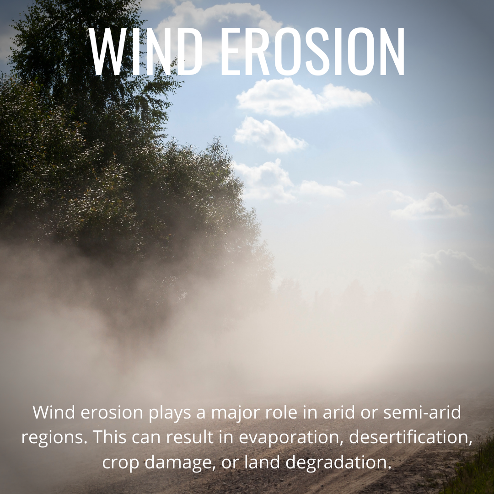

Wind Erosion
Wind erosion is a significant form of soil erosion that occurs when wind removes and transports soil particles from the land surface. Unlike water erosion, which is driven by the force of rainfall and runoff, wind erosion is driven by the movement of air across the landscape. It is particularly prevalent in arid and semi-arid regions where vegetation cover is sparse and soil is dry and loose.
Here's a detailed overview of wind erosion:
Process: Wind erosion occurs when the force of wind exceeds the soil's ability to resist detachment and transport.
The process typically involves four main stages:
- Surface Disturbance: Wind causes soil particles to be lifted and moved across the surface, creating ripples or small-scale features such as sand dunes.
- Saltation: Larger soil particles are lifted into the air and transported in short, bouncing hops along the ground surface.
- Suspension: Fine soil particles, known as dust or silt, are lifted high into the air and carried over long distances by wind currents.
- Deposition: Soil particles eventually settle out of the air and are deposited elsewhere, often accumulating in downwind areas or forming sediment layers.
- Loss of Topsoil: Wind erosion results in the removal of fertile topsoil, which contains essential nutrients and organic matter necessary for plant growth.
- Land Degradation: Wind erosion can degrade the quality of land and natural habitats, leading to decreased soil fertility, reduced agricultural productivity, and habitat loss.
- Air Quality: Wind-blown dust and particulate matter generated by wind erosion can degrade air quality, pose health risks to humans and animals, and contribute to respiratory problems.
- Planting windbreaks, cover crops, grass buffers, and native vegetation to stabilize soil, reduce wind velocity, and increase surface roughness.
- Implementing conservation tillage, crop rotation, contour farming, and strip cropping to minimize soil disturbance, improve soil structure, and enhance water retention.
- Applying soil amendments such as mulch, organic matter, and soil stabilizers to protect the soil surface, prevent crusting, and promote vegetation establishment.
By addressing the underlying factors contributing to wind erosion and implementing appropriate erosion control measures, land managers can mitigate soil loss, protect agricultural productivity, and safeguard environmental resources in wind-affected regions.